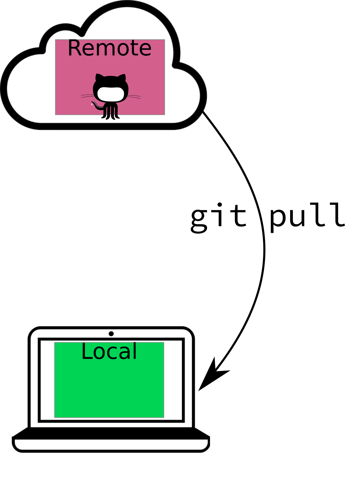
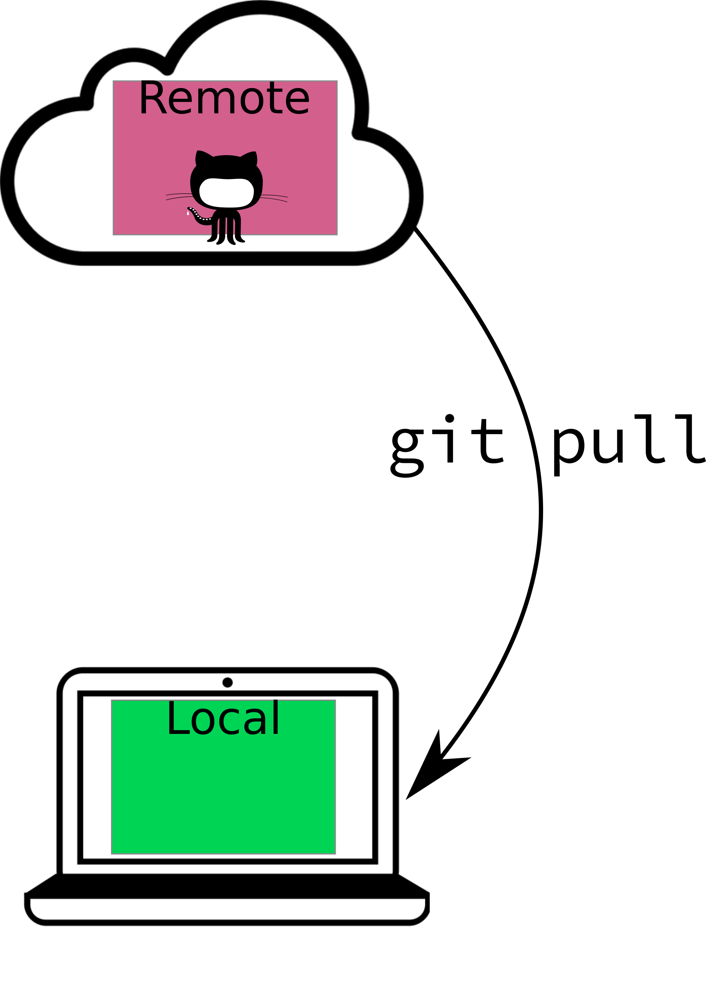

Module 1 Tools for Statistical Computing
The goal of this class is to expose you to basic computing skills in R and SAS, which are two of the more common languages for statistical computing (python is the 3rd most common, and is particularly popular in data science and machine learning, but will not be explicitly taught in this class.)
Since we’ll be learning how to use a bunch of different software, the first step is to get everything set up on your machine:
You will also need to sign up for a GitHub account
Module Objectives
Set up R, Rstudio, SAS, LaTeX, and git on personal machines
Use version control to track changes to documents and code
1.1 R and RStudio
An explanation of the differences between the R and RStudio and a short history lesson.
R is a statistical computing language which originated as an open-source clone of Bell labs S computing language. S was inspired by Scheme, but also has features which are similar to Lisp. It is a scripting language (you don’t have to compile the code before it runs) and is natively accessed using a command-line prompt. One feature of R that is relatively unique is that it uses vector-based math, which means that mathematical operations on vectors occur for the entire vector without having to use loops to iterate through the vector line-by-line (this feature is common in languages designed for data manipulation, like SAS, Matlab, and Julia; it is rare in more general computing languages). R is optimized for working on data: unlike more general-purpose programming languages such as Python, R was built with the idea of facilitating data analysis. As a result, data structures in R tend to be more natural for statistical work than similar structures in Python or C, which can feel unwieldy. From a computer science perspective, though, R seems like an extremely odd language because the design choices that make data analysis easier are unconventional for more general-purpose languages.
RStudio is an integrated development environment(IDE) for R. Basically, it adds a pretty graphical layer on top of R, providing an easy way to develop R code, evaluate that code, and keep track of all of the variables which are available in the computing environment. RStudio contains integrations which provide syntax highlighting, code folding, basic checks (missing parentheses, etc.), debugging tools, and many other features. RStudio was designed around the idea of making R easier to use and making it easy to develop statistical software reproducibly. RStudio (the company) is responsible for adding many features to the R ecosystem which facilitate running statistical analyses and presenting the results in user-friendly ways.
Another useful explanation of R and RStudio can be found in Section 1 of ModernDive’s book
1.1.1 Getting Set up: R
Note that the tutorial videos use versions of R that are old. You should be installing at least R 3.5 (if you have an older version, please update.) The basic installation process is the same, though, so the videos are still useful.
R on Linux installation
Once you have R installed, try to run the following code, which will install the packages you need to run the code in this book.
# Read in a list of all packages that are required
pkgs <- readLines("https://raw.githubusercontent.com/srvanderplas/unl-stat850/master/data/packages")
# Remove any already installed packages from the list
pkgs <- setdiff(pkgs, installed.packages())
# The following code will not make a lot of sense... yet. Come back to it in a
# few weeks and see how much you understand (or can decode)
# This ensures that if the installation fails, the code will keep running
try_install_pkg <- function(...) try(install.packages(..., dependencies = T))
lapply(pkgs, try_install_pkg)
Installing package into '/home/susan/R/x86_64-pc-linux-gnu-library/3.6'
(as 'lib' is unspecified)
Warning: package 'emo' is not available (for R version 3.6.3)
[[1]]
NULL
pkgs <- setdiff(pkgs, installed.packages())
if (length(pkgs) > 0) {
paste("The following packages did not install: \n", paste(pkgs, collapse = "\n"))
}
[1] "The following packages did not install: \n emo"If some packages did not install, feel free to post in Yellowdig with the error message(s) received and the list of packages you’re having trouble installing (or contact me and we’ll set up a time to debug).
1.1.2 Getting Set up: RStudio
You can find RStudio at https://RStudio.com/products/RStudio/download/. You want the open source edition of RStudio Desktop. If you’re feeling brave, you can install the preview release - this may have a few bugs, but tends to be relatively stable and has the latest features. Please install RStudio 1.3.9+ for this class.
If you’re on Linux, go ahead and import RStudio’s public key so that software validation works. (All of the commands are provided in the linked page)
1.1.3 Exploring RStudio

The RStudio window will look something like this.
In the top-left pane is the text editor. This is where you’ll do most of your work.
In the top right, you’ll find the environment, history, and connections tabs. The environment tab shows you the objects available in R (variables, data files, etc.), the history tab shows you what code you’ve run recently, and the connections tab is useful for setting up database connections.
On the bottom left is the console. There are also other tabs to give you a terminal (command line) prompt, and a jobs tab to monitor progress of long-running jobs. In this class we’ll primarily use the console tab.
On the bottom right, there are a set of tabs: - files (to give you an idea of where you are working, and what files are present), - plots (which will be self-explanatory), - packages (which extensions to R are installed and loaded), - the help window (where documentation will show up), and - the viewer window, which is used for interactive graphics or previewing HTML documents.
To get started, type 2+2 into the console window and hit enter.
Now, type 2+2 into the text editor and press the run button that is on the pane’s shortcut bar (or, you can hit Ctrl-Enter/CMD-Enter to send a single line to the console).
If both of those things worked, you’re probably set up correctly!
Next, try typing this into the text editor, then run the line. Look in the environment and see if you can see what has changed.

Your environment window should now look something like this (the .Last.value entry may not be there, and that’s ok)
You can use the environment window to preview your data, check on the status of variables, and more. Note that while R is running, the window doesn’t update (so you can’t check on the status of a loop while the loop is running using the window).
1.2 SAS
SAS is another extensively used statistical programming language. It is primarily used for mixed models and in the biostatistics community (for e.g. drug trials).
For SAS installation, see Steve Westerholt. He manages UNL SAS installations.
Note
SAS looks different on different machines. On Linux, SAS looks like you took a time machine back to the early 1990s. Screenshots from SAS will likely look very different on your machine than on mine. I will try to integrate screenshots from other OS’s where it matters1.
1.2.1 SAS Windows/Panes
The SAS toolbox has options to create new files, submit code, and more (but I mostly use keyboard shortcuts in the individual windows). This is probably one of the biggest things that’s different on Linux…
The SAS Log gives you lots of detailed information about how your code ran – look here for errors and warnings.

The SAS program editor is where you’ll be writing your code. If you want, you can write code in a more advanced text editor and copy/paste it into the log when you’re ready to run it.
There are two different places your output may end up: if you’re using the old output system, you’ll get text output in the output pane.
The old output system output pane.
The new output system uses HTML and will output to your browser.
You can navigate through your results using the results window
The explorer window lets you access documentation, data, and more
If you click on libraries, you get to this list:
This area of the SAS explorer shows all of the libraries you have access to.

Clicking on any one library will show you a list of datasets in that library
You can then click on a dataset and you will get a spreadsheet-like view.
1.2.2 SAS Modules
SAS is a very large set of programs. In this class, we’re primarily working with base SAS (the underlying language and interpreter), SAS/STAT (the statistical procedures, like PROC GLM), and SAS/IML, which is SAS’s version of a scripting language. IML allows you to implement your own procedures “from scratch”.
Initially, we’ll primarily focus on SAS/IML, because it contains information parallel to what you need to know to start programming in R. It’s easier to teach general programming concepts at the same time, even if your typical SAS course would probably introduce you to the DATA step and simple PROC statements first.
1.3 Version Control with Git

Git is a program whose primary purpose is version control. Git tracks changes to each file that it is told to monitor, and as the files change, you provide short labels describing what the changes were and why they exist (called “commits”). The log of these changes (along with the file history) is called your git commit history.
When writing papers, this means you can cut material out freely, so long as the paper is being tracked by git - you can always go back and get that paragraph you cut out if you need to. You also don’t have to rename files - you can confidently overwrite your files, so long as you remember to commit frequently.
The git material in this chapter is just going to link directly to the book “Happy Git with R” by Jenny Bryan. It’s amazing, amusing, and generally well written. I’m not going to try to do better.
1.3.1 Getting set up: GitHub
See the instructions here
1.3.2 Getting set up: git
See the instructions here
Write down, or keep track of, the git installation path. This will make your life much easier.
There is a troubleshooting guide that has some common problems which occur during git installation.
1.3.3 Introduce yourself to git
You need to tell git what your name and email address are, because every “commit” you make will be signed.
Follow the instructions here, or just wait and run the R script to install and configure R, LaTeX, and packages.
1.3.4 Optional: Install a git client
I don’t personally use a git client other than RStudio, but you may prefer to have a client, especially if you anticipate doing lots of work in SAS.
1.3.5 Git and Github
Slightly crude (but memorable) analogy (don’t click if you’re offended by PG13/R rated stuff)
Git is to GitHub what Porn is to PornHubGit is a program that runs on your machine and keeps track of changes to files that you tell it to monitor. GitHub is a website that hosts people’s git repositories. You can use git without GitHub, but you can’t use GitHub without git.
If you want, you can hook Git up to GitHub, and make a copy of your local git repository that lives in the cloud. Then, if you configure things correctly, your local repository will talk to GitHub without too much trouble. Using Github with Git allows you to easily make a cloud backup of your important code, so that even if your computer suddenly catches on fire, all of your important code files exist somewhere else.
Remember: any data you don’t have in 3 different places is data you don’t care about.2
1.4 Easy Extra Setup Script
Copy this script into a text editor in RStudio on your machine. It will ask you for some input - your name, email address, etc. – Make those changes in the text document, and then source the document.
It will run for a while, installing most of the packages you’ll need for this course. Read the code file if you want to know what it’s doing - I’ve provided short explanations of what each package does (and anyways, you shouldn’t run code on your machine if you don’t understand what it does).
This script will set up git for you (e.g. the introduce yourself to git section above) and then will install tinytex, which is a version of LaTeX that is very simple and easy to install. If you want to install a different version of LaTeX instead (like MikTex or TexLive) feel free to do so.
1.5 LaTeX
LaTeX is a typesetting program, which makes it different from most other document creation software, such as MS Word, which is “WYSIWYG” - what you see is what you get. In LaTeX, you’ll type in code to create a document, and LaTeX will compile the document into something pretty. The goal is that you have to think less about formatting and what goes on which page - LaTeX will handle that part for you - so that you can think more about the content.
In practice, it doesn’t usually work out like that, so there are programs like markdown which aim to simplify document creation even more to free you from the formatting that LaTeX requires.
LaTeX is often used for typesetting statistical and mathematical papers because its equation editor is top notch. (It was actually written by Donald Knuth because he got so annoyed trying to write his dissertation that he took some time off to write TeX first, and then used it to write his dissertation).^[Amusingly, knitr was written in much the same manner. Yihui Xie had to substitute-teach ISU’s version of 850 on the day we covered Sweave (a predecessor to knitr). He got so frustrated teaching the class that he went home and started writing knitr. Later, he developed Rmarkdown, bookdown, blogdown, and several other packages aimed at making writing documents + code easier to handle.
Moral of the story - if you get frustrated with the tools you have, you’re in good company. Use it as fuel to make better tools.]
We’ll work with LaTeX later in the semester, but for now, we’ll be primarily working with Markdown, which is much simpler. Here’s a quick cheatsheet.
1.6 Topic Sequencing
In several places in this class, you’ll have to use material that you haven’t been formally taught yet. I will do my absolute best to provide thorough instructions, help you along as much as I can, and generally provide enough support that you can muddle through. But it’s going to be hard to teach you everything you need to e.g. analyze some data, before providing you the opportunity to SEE that data using visualization packages. And it’s silly to teach you plotting before you know how to read data in. But to teach you how to read data in, you need to be able to take a look at the data, and plots are the best way to do that. To do any of this stuff, you need to know about functions, but it can be easier to figure out how to run a function than to write a function.
You see my problem.
So instead, what I’m going to do is to leave you lots of comments as to what a piece of code does when I’m using things you haven’t been formally shown yet. Then, you can copy/paste/modify those pieces of code, and if they break, you can ask why and we’ll dig into it (breaking code is usually a good thing, because it means you’re learning how to program). For each chapter, focus on learning how to write code that accomplishes that chapter’s objectives. If you understand some of the code you’re modifying that covers other topics not in that chapter, so much the better. But it’s not an expectation or a requirement.
If you’re confused, please post on the class message boards so that those who have seen this material before can help you out.
1.7 Using Version Control
I’ve set this class up so that you’ll be using version control from the very beginning. Not only will this help you to learn good habits, it will also give you a platform for collaboration, hosting your work online, and more.

If that doesn’t fix it, git.txt contains the phone number of a friend of mine who understands git. Just wait through a few minutes of ‘It’s really pretty simple, just think of branches as…’ and eventually you’ll learn the commands that will fix everything.
In this class, we’ll be using Github Classroom. Basically, this allows me to set up a template repository for each assignment. You’ll accept the assignment, which will create a copy of the repository on your GitHub account, and then your work will be saved to your repository using a fairly standard workflow which will be discussed below. When you submit your assignment, you’ll copy the link to the commit you want to be graded, and upload that to Canvas. I will clone your repository, compile your files (I’ll change the SAS path if necessary), and grade the compiled result.
So, what does your typical git/GitHub workflow look like? I’ll go through this in (roughly) chronological order. This is primarily my higher-level understanding of git - I do not have any idea how it works on the backend, but I’m pretty comfortable with the clone/push/pull/commit/add workflows, and I’ve used a few of the more complicated features (branches, pull requests) on occasion.
1.7.1 Create a Repository
Repositories are single-project containers. You may have code, documentation, data, TODO lists, and more associated with a project.
To create a repository, you can start with your local computer first, or you can start with the online repository first.
Both methods are relatively simple, but the options you choose depend on which method you’re using, so be careful not to get them confused.
1.7.1.1 Local repository first
Let’s suppose you already have a folder on your machine named hello-world-1 (you may want to create this folder now). You’ve created a starter document, say, a text file named README with “hello world” written in it.
If you want, you can use the following R code to set this up:
dir <- "./hello-world-1"
if (!dir.exists(dir)) {
dir.create(dir)
}
file <- file.path(dir, "README")
if (!file.exists(file)) {
writeLines("hello world", con = file)
}To create a local git repository, we can go to the terminal (in Mac/Linux) or the git bash shell (in Windows), navigate to our repository folder (not shown, will be different on each computer), and type in
git initAlternately, if you prefer a GUI (graphical user interface) approach, that will work too:
- Open Rstudio
- Project (upper right corner) -> New Project -> Existing Directory. Navigate to the directory.
- (In your new project) Tools -> Project options -> Git/SVN -> select git from the dropdown, initialize new repository. RStudio will need to restart.
- Navigate to your new Git tab on the top right.

Screen capture video of the steps described above to create a git repository in RStudio
The next step is to add our file to the repository.
Using the command line, you can type in git add README (this tells git to track the file) and then commit your changes (enter them into the record) using git commit -m "Add readme file".
Using the GUI, you navigate to the git pane, check the box next to the README file, click the Commit button, write a message (“Add readme file”), and click the commit button.

Screen capture video of the steps described above to add and commit a file in RStudio
The final step is to create a corresponding repository on GitHub. Navigate to your GitHub profile and make sure you’re logged in. Create a new repository using the “New” button. Name your repository whatever you want, fill in the description if you want (this can help you later, if you forget what exactly a certain repo was for), and DO NOT add a README, license file, or anything else (if you do, you will have a bad time).
You’ll be taken to your empty repository, and git will provide you the lines to paste into your git shell (or terminal) – you can access this within RStudio, as shown below. Paste those lines in, and you’ll be good to go.
Connect your local git repository to GitHub
1.7.1.2 GitHub repository first
In the GitHub-first method, you’ll create a repository in GitHub and then clone it to your local machine (clone = create an exact copy locally).
GUI method:
- Log into GitHub and create a new repository
- Initialize your repository with a README
- Copy the repository location by clicking on the “Code” button on the repo homepage
- Open RStudio -> Project -> New Project -> From version control. Paste your repository URL into the box. Hit enter.
- Make a change to the README file
- Click commit, then push your changes
- Check that the remote repository (Github) updated
Video of the GUI method for creating a repository starting with GitHub
Command line method:
- Log into GitHub and create a new repository
- Initialize your repository with a README
- Copy the repository location by clicking on the “Code” button on the repo homepage
- Navigate to the location you want your repository to live on your machine.
- Clone the repository by using the git shell or terminal:
git clone <your repo url here>. In my case, this looks likegit clone git@github.com:stat850-unl/hello-world-2.git - Make a change to your README file and save the change
- Commit your changes:
git commit -a -m "change readme"(-a = all, that is, any changed file git is already tracking). - Push your changes to the remote (GitHub) repository and check that the repo has updated:
git push
1.7.2 Adding files
git add tells git that you want it to track a particular file.

git add diagram: add tells git to add the file to the index of files git monitors.
You don’t need to understand exactly what git is doing on the backend, but it is important to know that the actual contents of the file aren’t logged by git add - you have to commit your changes for the contents to change. git add deals solely with the index of files that git “knows about”, and what it thinks belongs in each commit.
If you use the RStudio GUI for your git interface, you generally won’t have to do much with git add; it’s (sort-of, kind-of) equivalent to clicking the check box.
1.7.2.1 What files should I add to git?
Git is built for tracking text files. It will (begrudgingly) deal with small binary files (e.g. images, PDFs) without complaining too much, but it is NOT meant for storing large files, and GitHub will not allow you to push anything that has a file larger than 100MB3. Larger files can be handled with git-lfs (large file storage), but storing large files online is not something you can get for free.
In general, you should only add a file to git if you created it by hand. If you compiled the result, that should not be in the git repository under normal conditions (there are exceptions to this rule – this book is hosted on GitHub, which means I’ve pushed the compiled book to the GitHub repository).
You should also be cautious about adding files like .Rprog, .directory, .DS_Store, etc. These files are used by your operating system or by RStudio, and pushing them may cause problems for your collaborators (if you’re collaborating). Tracking changes to these files also doesn’t really do much good.
I highly recommend that you make a point to only add and commit files which you consciously want to track.
1.7.3 Staging your changes
In RStudio, when you check a box next to the file name in the git tab, you are effectively adding the file (if it is not already added) AND staging all of the changes you’ve made to the file. In practice, git add will both add and stage all of the changes to any given file, but it is also useful in some cases to stage only certain lines from a file.
More formally, staging is saying “I’d like these changes to be added to the current version, I think”. Before you commit your changes, you have to first stage them. You can think of this like going to the grocery store: you have items in your cart, but you can put them back at any point before checkout. Staging changes is like adding items to your cart; committing those changes is like checking out.
Individually staging lines of a file is most useful in situations where you’ve made changes which should be part of multiple commits. To stage individual lines of a file, you can use git add -i at the command line, or you can attempt to use RStudio’s “stage selection” interface. Both will work, though git can’t always separate changes quite as finely as you might want (and as a result, RStudio’s interface sometimes seems unresponsive, even though the underlying issue is with what git can do).
1.7.4 Committing your changes
A git commit is the equivalent of a log entry - it tells git to record the state of the file, along with a message about what that state means. On the back end, git will save a copy of the file in its current state to its cache.
Here, we commit the red line as a change to our file.
In general, you want your commit message to be relatively short, but also informative. The best way to do this is to commit small blocks of changes. Work to commit every time you’ve accomplished a small task. This will do two things:
- You’ll have small, bite-sized changes that are briefly described to serve as a record of what you’ve done (and what still needs doing)
- When you mess up (or end up in a merge conflict) you will have a much easier time pinpointing the spot where things went bad, what code was there before, and (because you have nice, descriptive commit messages) how the error occurred.
1.7.5 Pushing and Pulling
When you’re working alone, you generally won’t need to worry about having to update your local copy of the repository (unless you’re using multiple machines). However, statistics is collaborative, and one of the most powerful parts of git is that you can use it to keep track of changes when multiple people are working on the same document.
If you are working collaboratively and you and your collaborator are working on the same file, git will be able to resolve the change you make SO LONG AS YOU’RE NOT EDITING THE SAME LINE. Git works based on lines of text - it detects when there is a change in any line of a text document.
For this reason, I find it makes my life easier to put each sentence on a separate line, so that I can tweak things with fewer merge conflicts. Merge conflicts aren’t a huge deal, but they slow the workflow down, and are best avoided where possible.
Pulling describes the process of updating your local copy of the repository (the copy on your computer) with the files that are “in the cloud” (on GitHub). git pull (or using the Pull button in RStudio) will perform this update for you. If you are working with collaborators in real time, it is good practice to pull, commit, and push often, because this vastly reduces the merge conflict potential (and the scope of any conflicts that do pop up).
Pushing describes the process of updating the copy of the repository on another machine (e.g. on GitHub) so that it has the most recent changes you’ve made to your machine.
 

In general, your workflow will be
- Clone the project or create a new repository
- Make some changes
- Stage the changes with git add
- Commit the changes with git commit
- Pull any changes from the remote repository
- Resolve any merge conflicts
- Push the changes (and merged files) with git push
If you’re working alone, steps 5 and 6 are not likely to be necessary, but it is good practice to just pull before you push anyways.
1.8 References
Crash course on git (30 minute YouTube video)
Git and GitHub for poets YouTube playlist (this is supposed to be the best introduction to Git out there…)
More advanced git concepts, in comic form, by Erika Heidi
As I write this in late July 2020, I do not yet have access to a Windows or Mac machine. Sigh. XXX TODO: Get Windows/Mac screenshots XXX↩
Yes, I’m aware that this sounds paranoid. It’s been a very rare occasion that I’ve needed to restore something from another backup. You don’t want to take chances. I knew a guy who had to retype his entire masters thesis from the printed out version the night before it was due because he had stored it on a network drive that was decommissioned. You don’t want to be that person.↩
Yes, I’m seriously pushing it with this book; several of the datasets are ~30 MB↩